14:16 от отеля ~5 мин до станции Umeda, линия Midosuji (красная), платформа 1, поезд на Tennoji. Остановки: Yodoyabashi → Hommachi → Shinsaibashi (14:23, 7 мин). Поезда каждые несколько минут, следующий тоже подойдёт. Выход к Shinsaibashi-suji.
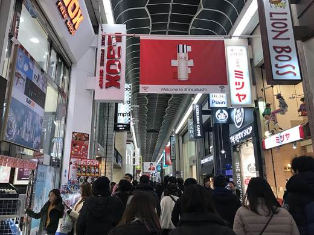
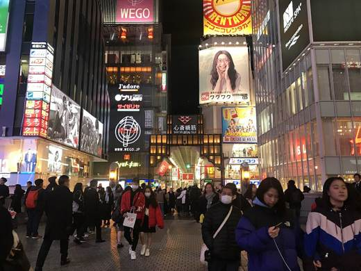
Из метро Shinsaibashi выход к крытой улице и ~9 мин пешком на юг (700 м) прямо к мосту через канал. Улица пешеходная, под крышей.
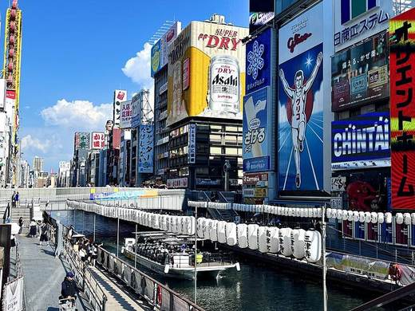
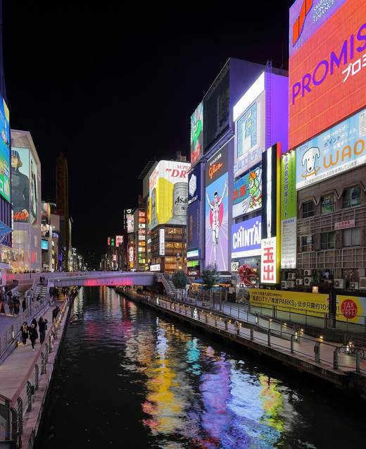
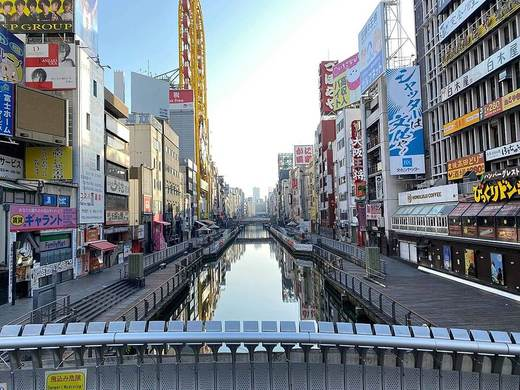
Та самая главная улица вдоль канала Dotonbori: мост, бегущий Glico, вдоль воды пешеходная набережная Tombori River Walk. Отсюда иди по улице Dotonbori на восток.
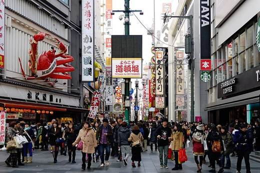
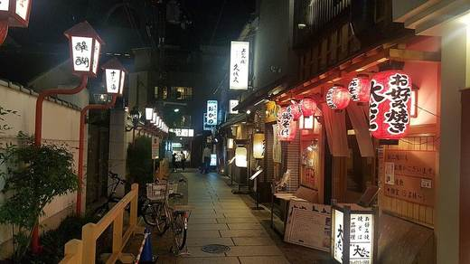
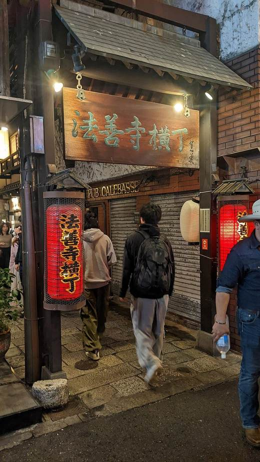
Улица еды: огромные вывески (краб, осьминог), такояки, кушикацу, рамен. Через 3 мин на юг - тихий каменный переулок Hozenji Yokocho и статуя во мху (храм открыт круглосуточно).
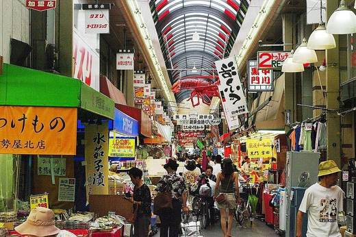
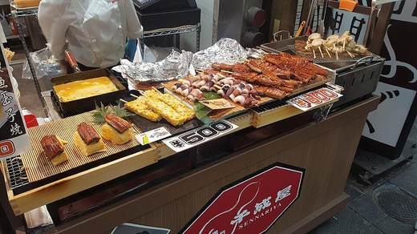
12 мин на восток. Крытый рынок ~580 м: морепродукты на гриле, вагю на шпажках. Лавки к вечеру закрываются, поэтому до ~17:00. Цены туристические.
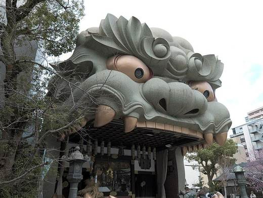
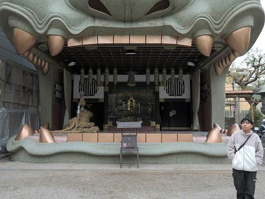
16 мин на юго-запад. Сцена в виде головы льва высотой 12 м. Ворота открыты до 17:00 (osaka-info), поэтому до пяти. Оттуда 16 мин обратно к каналу - как раз к закату (17:13) и включению неона.
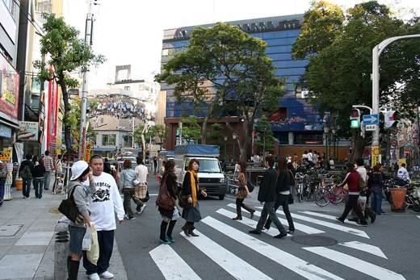
Молодёжный квартал к западу от Shinsaibashi-suji, 5 мин в сторону: уличная мода, кафе, треугольная площадь.
Пешком не близко: от моста Ebisubashi до ворот замка Otemon 3,6 км, ~50 мин, до главной башни 4,3 км, ~1 ч (OSRM). На карте серый пунктир.
Метро ~15-20 мин: из Namba красная Midosuji 2 остановки до Hommachi, пересадка на Chuo line (зелёная) 2 остановки до Tanimachi 4-chome (пример по Yahoo: 16:40 → 16:53). От станции 6 мин до ворот Otemon.
Сегодня открыто: главная башня до 18:00, вход до 17:30. Сад Nishinomaru до 17:00, вход до 16:30. Билеты в старые башни Sengan и Tamon продают до 15:30.
Вечером Dotonbori с неоном, рядом бары и руфтопы. Карта мест с часами - на странице про вечер в Осаке (раздел Minami).
Обратно: красная Midosuji из Namba или Shinsaibashi в сторону Shin-Osaka / Minoh-kayano до Umeda, 8-9 мин. Последний вариант по Yahoo на сегодня - в Umeda в 00:19. Позже - такси, ~4 км; водителю показать: ホテルグランヴィア大阪.
Поезда: Yahoo!乗換案内 на 24.10. Пешие отрезки: OSRM. Погода: JMA (11:00) и Open-Meteo. Часы: офиц. сайты и osaka-info, см. страницы мест. Фото: Wikimedia Commons.


_Shrine_hdsr_S5_l07.jpg){kind=link}
_Shrine_hdsr_S5_l05.jpg){kind=link}